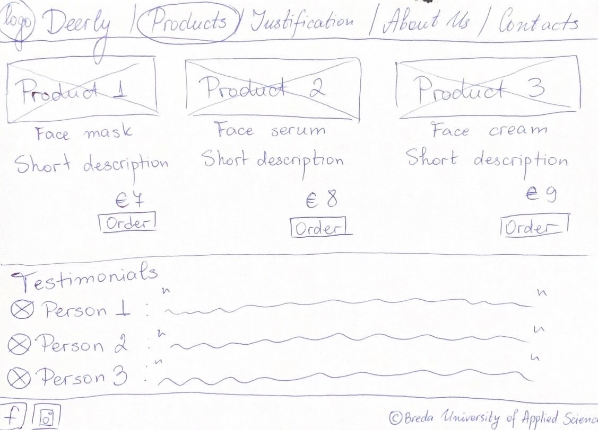
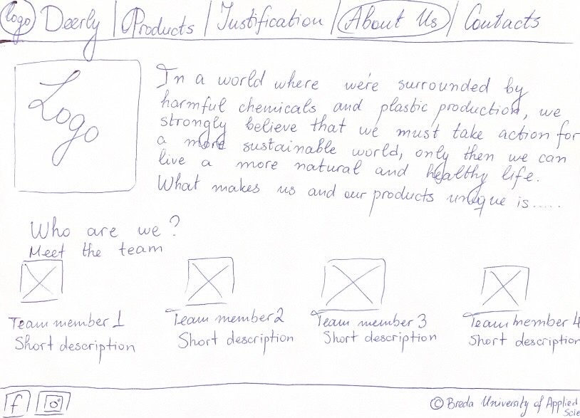
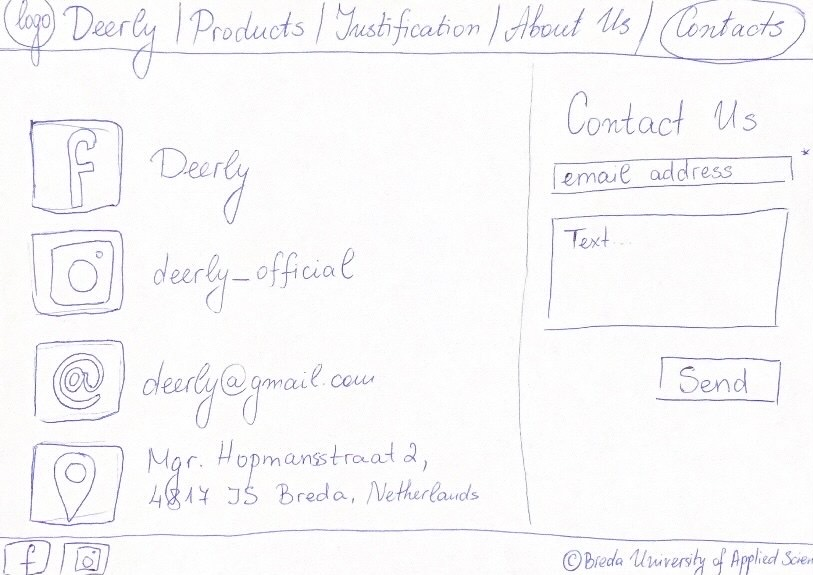

Flow diagram
Our website consists of four main pages (Home, Products, About Us, and Contacts) for the visitors and one Justivication page, where all of the design choices we've made are explained.
On the Home page, the first thing a visitor see is a clear call to action to check our product catalog and order. There are also two pictures and and one sentance about our brand.
The Products page consists of pictures of our products, description and an Order button, that will lead to a Cart page, that is still unavailable. There are also testimonials from clients.
The About Us page is made to get the customers more familiar with the brand. It will contain our logo, vision and also more info about our team.
The Contacts page makes contacting us easier for clients, as there they can directly send us a message and also find links to our social media accounts, our email and actual address.
Users can easily navigate through the pages using the navigation bar, which allows them to choose any page, no matter which one they are currently on.

Colors
For our color palette, we chose feminine and aesthetically pleasing colors that also represent nature. Between the green and peachy colors, we wanted to create a feeling of liveliness and freedom. This palette is our portrayal of the cleanness of our products. We stand for organic ingredients, so this is how we decided on showcasing this statement.

Fonts
The fonts we chose are rather feminine but easy to read. We wanted to keep our brand as clean and simplistic as possible. Those two fonts create the feeling of stability and soft-touch at the same time. We used them for this site and also for the content on our social media platforms. They are original and unique. Therefore they are a part of our brand concept. We know that our clients will connect those fonts to our brand only.
Wireframe




On these pictures is the paper prototype of our site. We split it into four main pages. Every single one of them showcases their practicalities. This was the first time we saw what we would have to execute later on in the project.
User Testing Results
Person 1:Said she would like to add products to her favorites.
Person 2:Said to add more information about the brand and its goals and vision on the ‘about’ page.
Person 3:Said he would like to have a basket icon and an option to log in to his account.
Person 4:Suggested adding jumping windows with ingredients used to create a certain product.
Person 5:Recommended to have more information on the team and the brand itself on the About Us page.
Person 6:Said we should keep the design simple and clean as it is now.
Person 7:Would love to have a cart where all his products would be stored in one place.
Person 8:Recommended to Put the about us after products. He said that the Order button could be “Learn more”.
What we've changed
1. We created a cart page; people will be able to see their chosen products. As of now, the cart doesn’t work because we do not have any products on our site.
2. On the contact us page we created an easy submit question bar, so it is easier for clients to contact us.
3. We made sure to keep the design simple and clean.
4. We put the about us button after products.